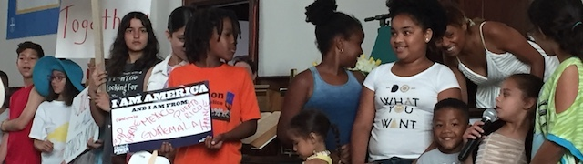
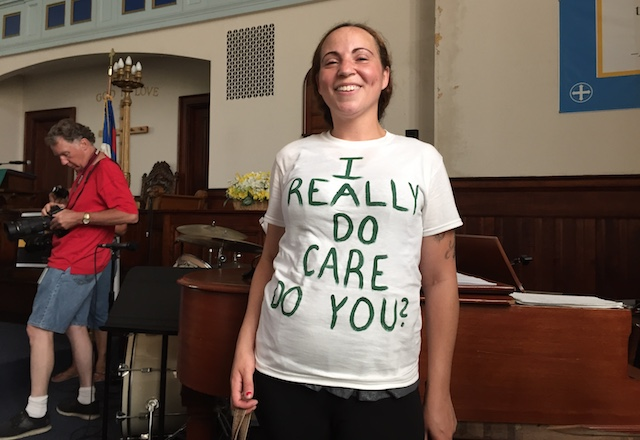
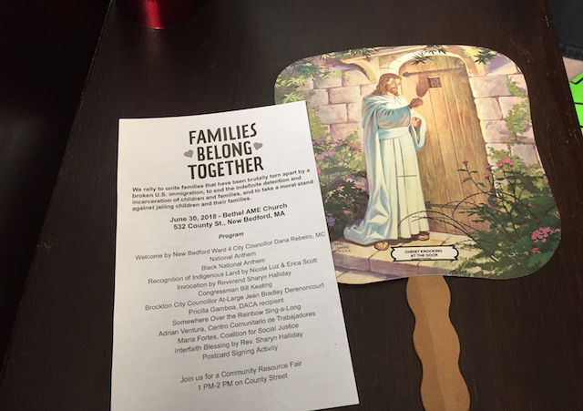

2018-06-30 08:00

Yesterday I attended a “Families Belong Together” rally in New Bedford, one of hundreds of similar events taking place nationwide. Between 400-500 people attended, overflowing into the balcony at the Bethel AME Chuch on County Street. It was good to see friends, neighbors, my sister-in-law, and to hear heartfelt expressions of concern for detained children and famillies. It was a tangible reminder that we — our undocumented friends included — are all members of a single community. It was also an affirmation of our responsibility for one another.

Over the years I’ve been to a number of events like this, often following something horrible — mass shootings, acts of hate, threats to civil liberties. Now it’s the Federal government caging children. Over the years I’ve noticed the same concerned citizens meeting as one, praying as one, the same clergy bowing their heads in unity, making the same reassurances, hearing the same exhortations from politicians and community leaders. There’s a “feel good” aspect to it all that disturbs me. Why aren’t people marching in the streets? Why aren’t there fewer bowed heads and more raised fists?

To be sure, the good friends of immigrants showed up and were counted. Community, union and faith leaders were in the pews. New Bedford House Representative Tony Cabral brought a daughter with every reason to be proud of her dad. New Bedford City Council member Dana Ribeiro spoke warmly to her city, and Brockton Council member Jean Bradley Derenoncourt delivered a moving appeal for America to keep faith with those who arrive here just looking to survive. The Coalition for Social Justice’s Maria Fortes pressed for House adoption of Senate Amendment #1147 — immigrant protections being now considered in conference by the House.
But the event did not reflect well on an overwhelmingly blue Massachusetts House that refused to vote on the Safe Communities Act and on Congressional Democrats who have done little for TPS and DACA recipients (both of whom were present yesterday). With the exception of Tony Cabral, not one other state representative bothered to show up at the New Bedford rally. And the lone U.S. Congressman who spoke should never have been invited.
Bill Keating (MA-09) gave an energetic shirtsleeve speech — all clenched fists and outrage at the Trump administration’s caging of six year-olds. The problem with Keating’s performance was not its dramatic fist-pumping; it was the hypocrisy. Keating has voted repeatedly for GOP anti-immigrant bills. H.R.3009 punished Sanctuary Cities. H.R.4038, the American Security Against Foreign Enemies Act, restricted absorption of Syrian refugees. H.R.3004, “Kate’s Law,” took a hard line against desperate people who re-enter the United States. And Keating’s “On the Issues” statement on immigration reads like it was written by Jeff Sessions himself:
“Bill Keating opposes amnesty. As a District Attorney, Bill Keating enforces our laws and believes that everyone must obey them. His office has prosecuted thousands of criminal cases that resulted in defendants being detained for immigration and deportation action. Bill believes that we must secure our borders, and wants to punish and stop corporations that hire workers here illegally. Bill does not support giving people who are here illegally access to state and federal benefits.”
Toward the end of the rally a group of local children recited ‘families deserve to stay together" in multiple languages, sweetly honoring children now sitting in ICE and CPB cages. With the event ending, clergy lined up awkwardly, a long interfaith blessing was delivered, and attendees filed outside into the hot summer air.